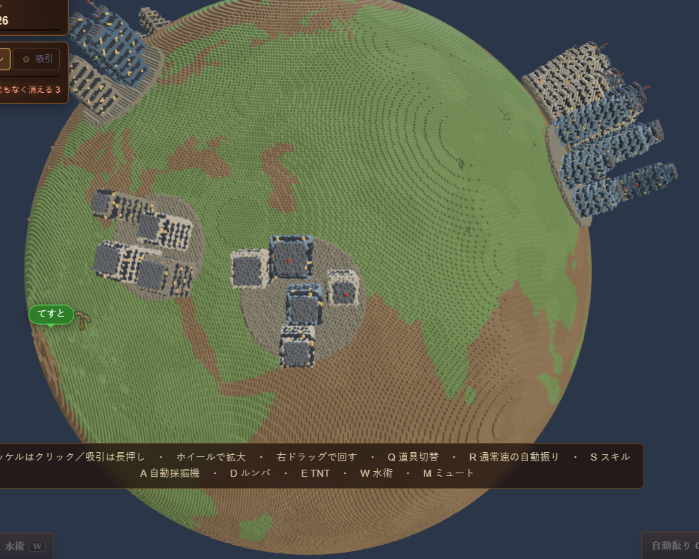

One planet, and everyone is digging it at onceDig Planet

Read the guide below, or load the game when you are ready.
There is one planet, and everybody who opens this page is digging it. Not a copy of it — the same one. The hole you make stays in everyone else's world, and the holes other people make are already waiting for you when you arrive.
Language note: the interface is in English here, and there is a JA/EN switch in the bottom-right cluster if you want the original Japanese. Digging is done with the mouse, the spacebar and about eight single keys either way, so the controls table below still covers everything.
Nobody finishes this. The planet is 384 × 384 × 384 voxels, which is more than 26 million of them, so it gets dug the way a hole in a park gets dug: a bit at a time, by whoever is around. What you can finish is reaching the middle. Something is buried in there that a pickaxe will not go through.
The first load takes a few seconds while the shape of the planet comes down. When it is ready you are asked for a name, and that name floats over the spot where you are digging for everybody else to see.
At a Glance
| Genre | Shared-world mining clicker, idle-friendly |
|---|---|
| Price | Free, no install, no account |
| Platform | Desktop (Chrome / Edge / Firefox / Safari) and mobile |
| Players | Everyone shares one planet. No player cap |
| World | 384³ voxels, over 26 million to clear completely |
| Terrain | Earth's coastlines, six layers by depth, and 45 destructible buildings across eight real cities |
| Skills | Seven branches. Only dig speed has no level cap |
| Saves | Auto-saved in your browser. An eight-character code moves them to another device |
| Language | English and Japanese, switchable in-game |
How to Play
- Dig: click the planet, or hold the spacebar. Holding is not slower than clicking — it swings at the same rate
- Get close: zoom in about two steps with the wheel, or pinch on a phone. This is the step everybody skips
- Collect: press Q to swap the pickaxe for the suction tool, then hold on the hole you just made. The fragments turn into blocks
- Upgrade: press S and spend the blocks. The next swing removes more than the last one did
Fragments sit there for 90 seconds and then they are gone. For the first 2.5 seconds they are yours alone; after that anyone can hoover them up, which in a busy spot is either a nuisance or a living, depending on how you look at it.
Controls
| Dig | Left click, spacebar, or tap the screen |
|---|---|
| Swap tool | Q or Tab, or the pickaxe / suction buttons on screen |
| Collect fragments | Hold with the suction tool equipped, close to the surface |
| Turn the planet | Right-drag, or drag on mobile |
| Zoom | Mouse wheel, or pinch |
| Skill board | S, or the board button at the bottom of the screen |
| Machines | A auto-miner, D roomba, E blast, W water |
| Auto-swing | R (unlocks with the auto-miner) |
| Chat | Enter to open, Enter again to send |
| Sound | M, or the speaker button at the bottom right |
The Seven Skills
- Pickaxe: how much one swing removes. Every level you buy is guaranteed to change the number
- Dig speed: shortens the gap between swings. The only branch with no level cap
- Suction core: reach, radius, and how many fragments come in at once
- Auto-miner: a machine you plant on the surface that keeps chewing at its own patch
- Roomba: a brass disc that chases loose fragments down and collects them for you
- Blast: three seconds of fuse, then it takes out everything around it
- Water: floods the hollow you dug and stays about a minute. Cooling hot rock makes it soft again
Depth Is the Reward
The rock changes colour as you go: surface, crust, bedrock, a blue layer, hot red stone, and finally lava. Each change is a change in what you are pulling out.
Ore veins run through all of it. When a swing lands in one, that swing pays out several times over — three times for copper, eight for amethyst, twenty for gold, sixty for diamond. Veins never reach the surface, and the deeper you are, the better the odds of the rare ones. Every find is written into your mineral notebook.
The hot layers cost you. Dry red rock and lava resist the pickaxe, and the way through is the water skill: flood the area, cool it, and the rock gives way normally again.
What Is Buried Inside
I am not going to say. There is something down there, it is hard, and a pickaxe does not go through it.
When someone reaches it, everyone connected is told. It has eight distinct parts, and for each one the game records the name of whoever uncovered it first.
Other People
There is no lobby and no room code. Open the page and you are on the planet with whoever else is on it, each of you working your own patch of it.
Chat is on Enter. Please keep real names, addresses and contact details out of it, because strangers can read it. There is also a running leaderboard of total voxels removed, which is the honest measure of who has actually been putting the hours in.
Developer's Note
The suction tool started with a radius of four voxels, which I picked because it sounded reasonable. Then I measured what a new player was actually aiming at, and the nearest fragment was typically 6.1 voxels away. Every new player was holding the button down over an empty patch of rock and getting nothing at all.
It is ten now, and the tutorial says out loud that you have to zoom in first. That one number was the difference between a game about digging and a game that appeared to be broken on arrival.
FAQ
- Is it really free?
- Yes. No install, no account. Open the page and dig.
- Am I really digging the same planet as everyone else?
- The same one. Your holes stay in their world and theirs are in yours, and you can see who is connected and where they are working.
- Is it in English?
- Yes. This page loads it in English; the JA/EN button in the bottom-right corner switches back to Japanese at any time, and your progress is untouched either way.
- I dig, but I cannot pick anything up.
- Suction only reaches near the surface. Zoom in two steps, swap to suction with Q, and hold on the hole. A grey tool icon in the middle of the screen means you are still too far out.
- Can I dig the whole thing myself?
- No. Clearing it takes more than 26 million voxels. Reaching the thing at the centre, though, is well within a first session.
- Can I play on a phone?
- Yes. Tap to dig, and the buttons along the bottom cover the tools, the machines, the blast and the water, so nothing needs a keyboard.
- Will my progress be there tomorrow?
- Blocks and skill levels are saved in your browser. Clearing site data wipes them, and another device or browser starts fresh. The transfer button at the bottom right issues an eight-character code that lasts ten minutes and works once.
- I dig and dig and it never ends.
- That is the design. It is one rock for everybody, so measure a session in veins hit and parts uncovered rather than in progress bars.